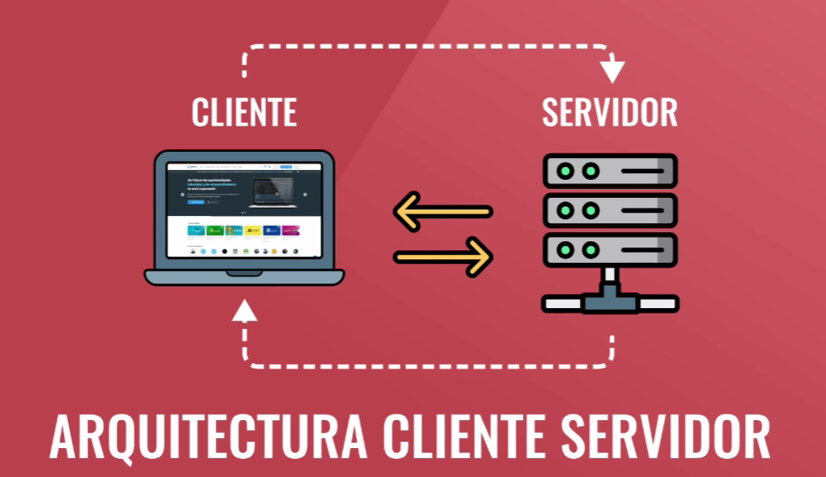

Saúl Sánchez de la Fuente
Saúl Sánchez de la FuenteSección Arquitectura Cliente-Servidor
¿Que es la arquitectura Cliente-Servidor?
El cliente y el servidor son 2 computadoras, el cliente pide la información y el servidor es el que la entrega siempre y cuando el cliente tenga los permisos.
El concepto de cliente servidor, o cliente-servidor, refiere por lo tanto a un modelo de comunicación que vincula a varios dispositivos informáticos a través de una red. El cliente, en este marco, realiza peticiones de servicios al servidor, que se encarga de satisfacer dichos requerimientos.

Con esta arquitectura, las tareas se distribuyen entre los servidores (que proveen los servicios) y los clientes (que demandan dichos servicios). Dicho de otro modo: el cliente le pide un recurso al servidor, que brinda una respuesta.